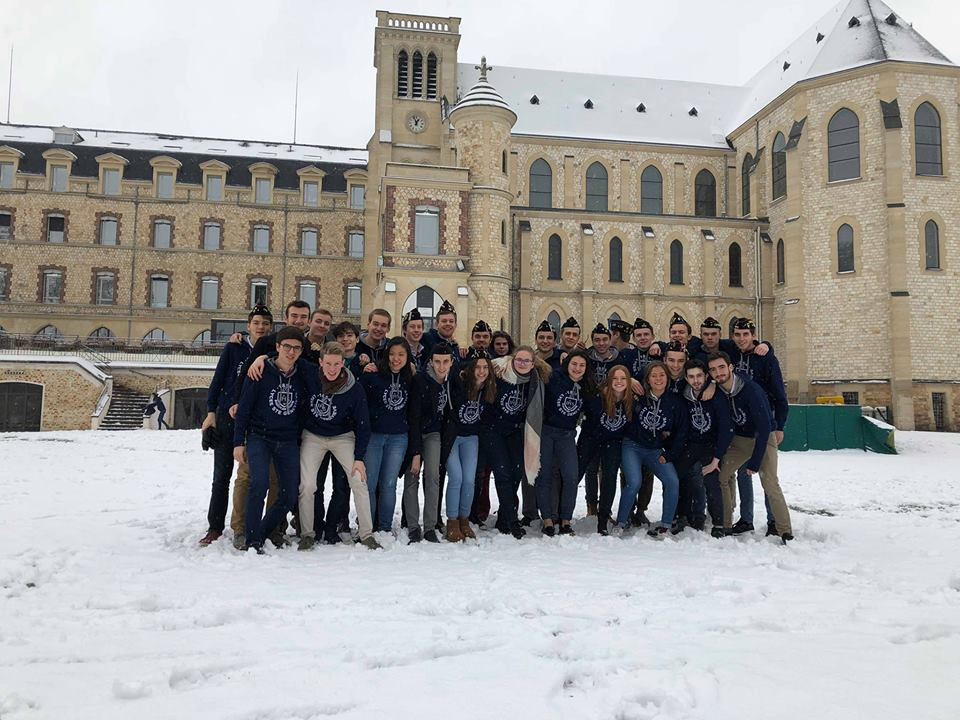

"Atoms, Ellipses, Agros, Pistons, Taupins, Epices, Sigmas... C'est bien original tout ça, mais concrètement, c'est quoi ?"
Noyau de la BJ, la classe de l'Atom est universellement reconnue comme étant l'élite, la crème de la crème. Nous sommes les meilleurs représentants des PCSI, voire même de tout Ginette ! Incarnation même de l'esprit co, de la solidarité et de l'entraide. Véritables références de l'organisation et de la ponctualité (selon la légende, on en a même fait des horloges), nous n'en sommes pas moins les premiers à sauter sur une occasion de s'éclater tous ensemble.
Noyau de la BJ, la classe de l'Atom est reconnue comme l'élite.
Que ce soit pour un match de rugby, un cours de zumba, un concert de l'orchestre ou pour une animation au réfectoire, il y aura toujours un Atom ! C'est dans notre ADN depuis 165 ans: un Atom se doit d'être sérieux mais ouvert et disponible. La galanterie est également une de nos pierres angulaires : vous ne verrez jamais une de nos camarades féminines arriver seule en portant son sac en cours !
Historiquement, les Atoms sont les PCSI 1. Mais depuis l'ouverture de la filière PTSI, nous nous sommes unis sous une seule et même bannière. Nous partageons donc le même réfectoire et participons à certains tournois sportifs inter-sections avec des joueurs provenant des deux classes. Ils font un peu de bruit, et chantent un peu faux, mais on les aime bien les PTSI !
La cohésion. L'unicité. C'est ce qui nous caractérise le mieux. Ensemble sur le même chemin. Qu'importe d'où nous venons, de Dunkerque à la Réunion en passant par Marseille, Bourg-La-Reine, le Gers, Casablanca, Paris ou la diagonale du vide, nous ne formons qu'un. C'est cette diversité qui nous rend si uniques.
C'est cette diversité qui nous rend si uniques.
En somme, un Atom est toujours fier d'être un Atom.